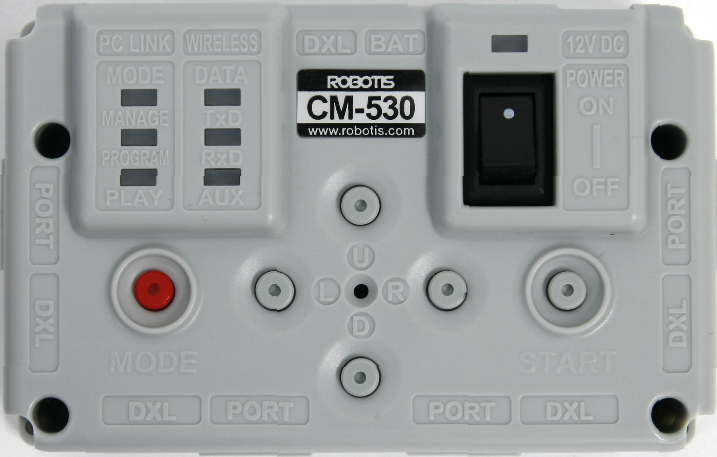
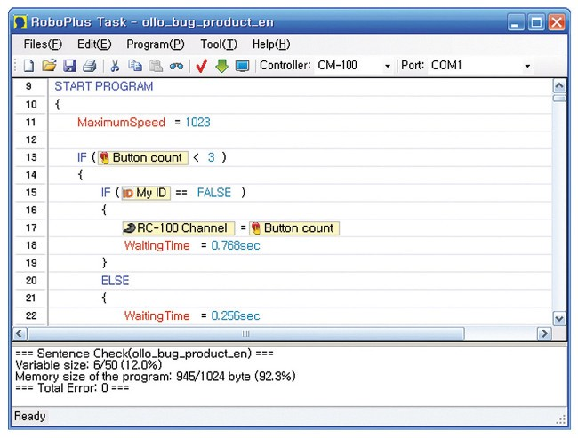

BIOLOID Premium Kit был разработан в 2005 году Южнокорейской компанией ROBOTIS, позиционирующих своего робота, как учебное пособие для робототехнике в ВУЗе. Компания начала формироваться в середине 90-х годов из группы техников-любителей, участвующих в различных профессиональных соревнованиях по робототехнике. В 1999 году появляется официальная компания ROBOTIS Co. Ltd, при который в тот же год основывается научно-исследовательская лаборатория. В 2001 году ROBOTIS Co. Ltd выпускает первого коммерческого робота [28]. В Российской Федерации продукцию компании ROBOTIS представляет компания ООО «Прикладная робототехника» и ряд сертифицированных партнеров.
BIOLOID Premium Kit состоит из:
- блока управления;
- деталей конструктора для сбора робота;
- инфракрасного дальномера;
- инфракрасного датчика препятствий;
- инфракрасного приемника;
- гироскопа;
- пульта дистанционного управления;
- сервоприводов.
Блок управления BIOLOID Premium Kit называется CM530 и построен на базе контроллера ATmega2561. Блок управления имеет тактовую частоту 16 Мгц и 256 Кб, флэш памяти [30]. У CM530 есть два 3-х контактных порта для подключения сервоприводов и два 5-ти контактных порта для подключения датчиков и периферийных устройств.

Блок управления CM530.
Для программирования BIOLOID Premium Kit используется среда разработки RoboPlus, поставляемая на CD диске в комплекте с основным конструктором. Для установки среды разработки на ПК, необходимо иметь установленную операционную систему линейки Windows.
В состав RoboPlus входят следующие программы:
- RoboPlus Task;
- RoboPlus Manager;
- RoboPlus Motion;
- RoboPlus Terminal;
- Dynamixel Wizard.
RoboPlus Task является основной программной средой для написания и редактирования управляющих программ. Разработка ведется на языке программирования, похожем на язык C. Для более удобного программирования некоторые базовые функции были вынесены в графические блоки.
RobotPlus Manager – среда для настройки и изменения параметров оборудования: сервоприводов, контроллера, датчиков.
В среде RoboPlus Motion осуществляется программирование особо сложных движений робота, которые затруднительно описать в RoboPlus Task.
RoboPlus Terminal применяется для отладки программ и получения информации с датчиков в режиме реального времени.
Dynamixel Wizard используется для настройки и калибровки сервоприводов.

Интерфейс среды разработки RoboPlus.
Преимуществами данного конструктора являются многофункциональная среда разработки, позволяющая кроме написания программ проводить различные тестирования моторов и датчиков и качественные демонстрационные модели, позволяющие наглядно продемонстрировать возможности устройства.
Недостатками данного конструктора являются высокий порог вхождения в программирование из-за необходимости знать язык C/C++ и небольшое количество датчиков в комплекте.
BIOLOID Premium Kit имеет поставляемый с производителем учебно-методический комплекс. Данный комплекс состоит из инструкции по сборке одной модели на бумажном носителе и обучающее пособие по программированию в среде разработки RoboPlus. Данный комплекс содержит лишь поверхностную информацию о программирование и в нем отсутствуют описание принципов работы датчиков и моторов, нет каких-либо обучающих инструментов для соревнований и базовых действий с датчиками.
Для BIOLOID Premium Kit отсутствуют любые сторонние учебно-методические комплексы.